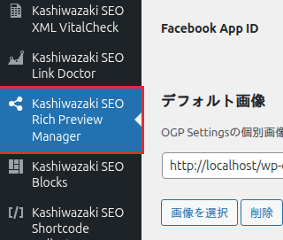

インストール・初期設定 マニュアル
Kashiwazaki SEO Rich Preview Manager のインストール方法と、リッチプレビュー出力に必要な基本設定を説明します。
インストール手順
WordPress管理画面から プラグイン > 新規追加 に移動し、「Kashiwazaki SEO Rich Preview Manager」を検索します。または、プラグインのZIPファイルを プラグイン > 新規追加 > プラグインのアップロード からアップロードします。
「今すぐインストール」をクリックし、インストール完了後「有効化」をクリックします。
管理画面の左メニューに「Kashiwazaki SEO Rich Preview Manager」が追加されます。クリックして設定画面を開きます。

有効化直後はすべての出力タイプが無効になっています。以下の初期設定で必要な出力タイプを有効にしてください。
初期設定
出力タイプの有効化
設定画面で、使用する出力タイプを個別に有効化します。5種類の出力タイプからサイトに必要なものを選択してください。
| 出力タイプ | 説明 |
|---|---|
| OGP | Open Graph Protocol メタタグ。Facebook、LINEなどSNSでのシェア表示を制御します。 |
| Twitter Card | Twitter Card メタタグ。X（旧Twitter）でのリンクカード表示を制御します。 |
| Meta Thumbnail | Meta Thumbnail タグ。検索結果でのサムネイル画像表示を制御します。 |
| PageMap | PageMap DataObject。Google AI Overviewsでの画像・メタデータ取得に対応します。 |
| robots max-image-preview | robots メタタグ。検索エンジンによる画像プレビューの最大サイズを指定します。 |
設定画面の「出力タイプ」セクションで、有効にしたいタイプのチェックボックスをオンにします。
「設定を保存」ボタンをクリックして変更を適用します。
サイト名の設定
og:site_name に使用されるサイト名を設定します。空欄の場合はWordPressの「サイトのタイトル」が使用されます。
デフォルト og:type の設定
トップページ以外の投稿で使用されるデフォルトの og:type を設定します。一般的には「article」を選択します。トップページは自動的に「website」が使用されます。
デフォルト Twitter Card タイプの設定
デフォルトのTwitter Cardタイプを選択します。
| カードタイプ | 説明 |
|---|---|
| summary | 小さなサムネイル画像付きのカード。テキスト中心のコンテンツに適しています。 |
| summary_large_image | 大きな画像付きのカード。写真やビジュアルコンテンツに最適です。CTR向上に効果的です。 |
Facebook App ID の設定
Facebook App IDを設定すると、fb:app_id メタタグが出力されます。Facebook Insightsでシェア数やエンゲージメントを確認するために必要です。
| 項目 | 説明 |
|---|---|
| Facebook App ID | Facebook for Developersで取得したアプリケーションID。数字のみで構成されます。 |
Facebook App IDは Facebook for Developers から取得できます。設定は任意ですが、Facebook Insightsを利用する場合は必須です。
Twitterユーザー名の設定
Twitterアカウントのユーザー名（@付き）を設定すると、twitter:site メタタグが出力されます。
| 項目 | 説明 |
|---|---|
| Twitterユーザー名 | @から始まるTwitterアカウント名（例: @example）。twitter:site タグに使用されます。 |
デフォルト画像の設定
投稿にアイキャッチ画像が設定されていない場合に使用されるデフォルトの画像を設定します。OGP、Twitter Card、Meta Thumbnail、PageMap のすべてで共通のフォールバック画像として使用されます。
設定画面の「デフォルト画像」セクションで「画像を選択」ボタンをクリックします。
メディアライブラリが開くので、使用する画像を選択します。推奨サイズは 1200 x 630px です。
「設定を保存」ボタンをクリックして変更を適用します。
OGP画像の推奨サイズは1200 x 630pxです。この比率（1.91:1）はFacebook、X、LINEなど主要なSNSで最適に表示されます。
投稿タイプの選択
メタタグを出力する投稿タイプを選択します。デフォルトでは「投稿」と「固定ページ」が対象です。カスタム投稿タイプが登録されている場合は、それらも選択肢に表示されます。
不要な投稿タイプでメタタグが出力されないよう、対象を適切に絞り込むことを推奨します。
旧プラグインからの移行
Kashiwazaki SEO OGP Manager（v1.x）をお使いの場合、本プラグイン（v2.0.0）にアップグレードすることで設定とメタデータを自動移行できます。移行前に必ずデータベースのバックアップを取得してください。
旧プラグイン（kashiwazaki-seo-ogp-manager v1.x）からの移行手順は以下の通りです。
旧プラグインを無効化します（削除はしないでください）。
本プラグイン（Kashiwazaki SEO Rich Preview Manager）をインストール・有効化します。
設定画面に移行通知が表示されます。「マイグレーションを実行」ボタンをクリックすると、旧プラグインの設定（ksom_options）と投稿メタデータが自動的に変換されます。
移行完了後、出力内容を確認し、問題がなければ旧プラグインを削除します。